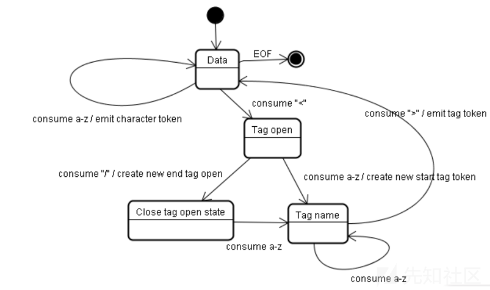

浏览器有三个解析器，共同解析一个HTML文档：
（1） HTML解析
（2）URL解析
（3）JavaScript解析
HTML解析
HTML解析器是一个状态机模型，读取数据后，根据转换规则进行状态跳转。

字符实体和字符引用
字符实体实际上是某些特殊字符的HTML编码。
所谓字符引用，就是引用被HTML编码后的字符。
字符引用有：
（1）字符值引用：'&#'+字符的ASCII十进制数字
（2）字符实体引用：'&'+字符实体名称
例如，字符"<"的字符值引用为" <"，字符实体引用为" <"。
可以容纳字符实体的三个状态：
（1）数据状态中的字符引用
（2）RCDATA状态中的字符引用
（3）属性值状态中的字符引用
三种状态在HTML中对应的位置：
（1）标签内的文本内容，或标签之外的内容
（2）标签<textarea>，<title>内的文本内容
（3）标签属性值的内容
解析一个标签的过程：
（1）当HTML解析遇到"<"时，进入Tag open状态，转到（2）；
（2）如果遇到"a-z"，进入解析标签Tag name状态，转到（4），否则跳转到（3）；
（3）如果遇到"/"，进入闭合标签解析(close tag open state)状态，跳转到（2）；
（4）如果遇到">"，回到Data状态。
这说明：如果字符实体是在Data状态引用，那么HTML解析器解析这段字符实体后，不会跳转到Tag open状态，也就不会把这段解析后的字符串当作一个标签。
特殊情况： 在浏览器解析RCDATA元素的过程中，解析器会进入“RCDATA状态”。在这个状态中，如果遇到“<”字符，它会转换到“RCDATA小于号状态”。如果“<”字符后没有紧跟着“/”和对应的标签名，解析器会转换回“RCDATA状态”。这意味着在RCDATA元素标签的内容中（例如<textarea>或<title>的内容中），唯一能够被解析器认做是标签的就是“</textarea>”或者“</title>”。
总结：在任何地方插入编码后的脚本标签<script></script>都不会被解析成标签，因此，不能执行里面的脚本代码（注意只是说明不能通过被解析成标签再执行代码，但字符引用被解码后，仍可以被js解析器执行）
URL解析
URL解析器也是一个状态机模型，从输入流中进来的字符可以引导URL解析器转换到不同的状态。
URL的编码形式：%+ASCII十六进制数字
值得注意的两点：
（1） URL 的 Scheme 部分（协议部分）必须为 ASCII 字符，即不能被任何编码，否则 URL 解析器的状态机将进入 No Scheme 状态。
（2）Scheme部分后面的冒号":"同样不能被编码，否则状态机将进入 No Scheme 状态。
说明：进入到No Scheme状态，这部分代码不会进行JS解析，也就不会执行脚本。
总结：<a href="javascript:alert('1')"></a>在href属性值嵌入脚本代码时，不能对伪协议部分(javascript)和冒号(:)进行URL编码，但可以对冒号(:)以后的部分编码。除此之外，可以对整个语句进行HTML编码，因为JavaScript解析是在HTML解析之后才进行，此时这部分代码已经被解析成正常代码。
JavaScript解析
编码形式：\uxxxx（xxxx为字符对应的Unicode）
"script"标签内的字符引用不会被解析和解码，因为js解析器的状态规则， 没有任何规则能转移到字符引用状态。
（使用svg标签包括script标签，可以提前将script块内的字符引用解码）
转义序列（编码后的字符串）的三个行为：
（1）对标识符转义：它可以被解码并解释为标识符名称的一部分，例如函数名，属性名等等。
（2）对控制字符转义：控制字符包括单引号''、双引号""、括号()等，它的转义序列被解码后仅仅被当成普通的字符串常量，失去原有的作用。
（3）对字符串转义：它可以被解码，解码后仍然是字符串常量。
总结：可以对函数名、属性名等标识符和字符串进行Unicode编码，但不能对控制字符[' " ()]进行编码，否则这些字符解码后失去原有的控制作用。
解析流
三个解析器的解析流程：
当浏览器从网络堆栈中获得一段内容后，触发HTML解析器来对这篇文档进行词法解析。在这一步中字符引用被解码。在词法解析完成后，DOM树就被创建好了，JavaScript解析器会介入来对内联脚本进行解析。在这一步中Unicode转义序列和Hex转义序列被解码。同时，如果浏览器遇到需要URL的上下文，URL解析器也会介入来解码URL内容。在这一步中URL解码操作被完成。由于URL位置不同，URL解析器可能会在JavaScript解析器之前或之后进行解析。